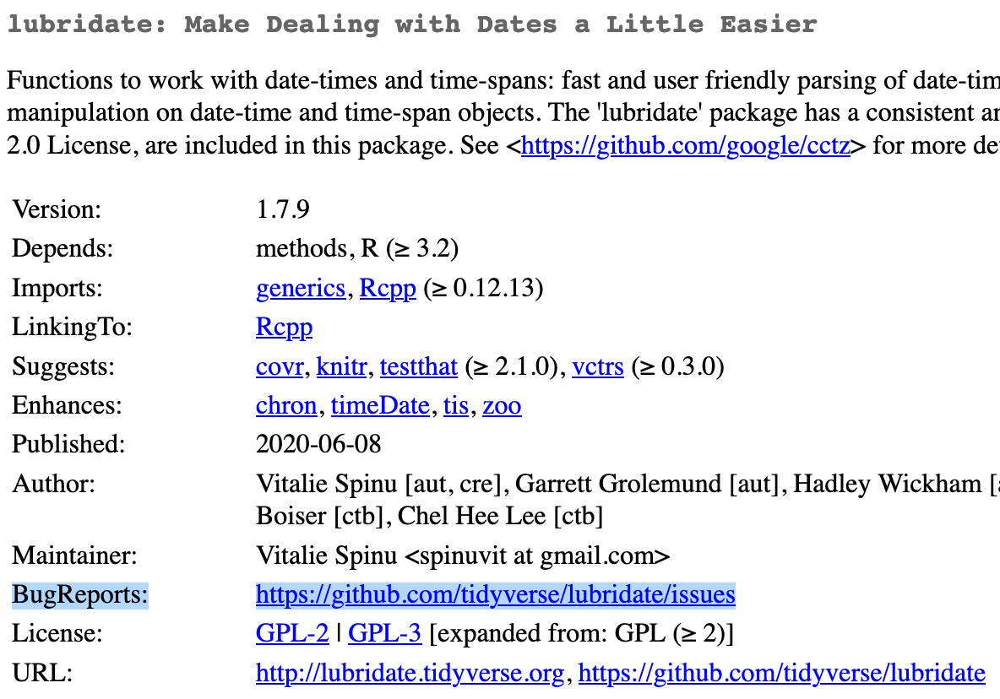

install.packages('lubridate', 'assertthat', 'reprex')5 Warnings, Errors, and Getting Help
5.1 Reading
5.2 Dependencies
5.3 Messages, warnings, and errors
- Message: Things are fine, but here’s some information you should know
- Warning: Uhhhh I’m gonna keep going, but maybe this isn’t what you want
- Error: Nope. I’m stopping here. You need to fix the thing.
message('Hey, just FYI')Hey, just FYIwarning('Uhhhh might want to check this out')Warning: Uhhhh might want to check this outstop('Noooooo')Error in eval(expr, envir, enclos): Noooooo5.4 Where to go for help
- Rubber duck debugging
- Isolate the problem
- Restart your session: Session \(\to\) Restart R
- Local help:
?fun - StackOverflow: https://stackoverflow.com/questions/tagged/r
- CRAN \(\to\) BugReports (usually GitHub Issues)
5.5 Example: Dates are often problems
library(lubridate)
Attaching package: 'lubridate'The following objects are masked from 'package:base':
date, intersect, setdiff, unionadd_six_months = function(date_str) {
parsed_dates = parse_date_time(date_str, orders = 'mdY')
parsed_dates %m+% months(6)
}
some_data = c('June 2002', 'May 15, 2007', 'August 2007')
add_six_months(some_data)Warning: 2 failed to parse.[1] NA "2007-11-15 UTC" NA - Note that this is a warning, not an error
- R won’t stop running here (unless we tell it to)
- Errors might not show up until much later in our code, making it hard to identify the root cause
- Or they might cause invisible problems, eg, by default
lm()silently drops observations with missing values
5.6 To catch warnings
- Set
options(warn = 2)to turn all warnings into errors - Use
tryCatch()with thewarningargument - Write a unit test
- My preferred approach: Add an assertion to your primary code
## Using an assertion to prevent warnings from cascading
library(assertthat)
six_months_later = add_six_months(some_data)Warning: 2 failed to parse.assert_that(all(!is.na(six_months_later)),
msg = 'Missing values in `six_months_later`')Error: Missing values in `six_months_later`5.7 Debugging
- Let’s start by using the RStudio debugger to isolate the problem
debugonce(add_six_months)
add_six_months(some_data)debugging in: add_six_months(some_data)
debug at <text>#3: {
parsed_dates = parse_date_time(date_str, orders = "mdY")
parsed_dates %m+% months(6)
}
debug at <text>#4: parsed_dates = parse_date_time(date_str, orders = "mdY")Warning: 2 failed to parse.debug at <text>#5: parsed_dates %m+% months(6)
exiting from: add_six_months(some_data)[1] NA "2007-11-15 UTC" NA - The problem is in
lubridate::parse_date_time().
- Spend a few minutes reading the documentation for this function and playing around with the call.
- What does the argument
ordersdo?
- What does the argument
?parse_date_timeparse_date_time(some_data, orders = 'mdY')Warning: 2 failed to parse.[1] NA "2007-05-15 UTC" NA parse_date_time(some_data, orders = c('mY', 'mdY'))[1] "2002-06-01 UTC" "2007-05-15 UTC" "2007-08-01 UTC"- Make this change in
add_six_months()and confirm it no longer trips the assertion.
5.8 Another example: More fun with dates
more_data = c('May 7, 2017', 'May 19, 2017', 'May Fifth, 2017')
mdy(more_data)[1] "2017-05-07" "2017-05-19" "2017-05-20"- SO doesn’t seem so helpful: https://stackoverflow.com/search?q=%5BR%5D+lubridate+written+days
- The CRAN page for
lubridateincludes a link to report bugs: https://cran.r-project.org/web/packages/lubridate/index.html

- Trying a couple of searches gives us a promising result: https://github.com/tidyverse/lubridate/issues?q=is%3Aissue+is%3Aopen+mdy

This is a known bug; it looks like they’re thinking about doing something about it, but the only workaround is to create an NA: https://github.com/tidyverse/lubridate/issues/685
5.9 Writing a reproducible example: reprex
https://reprex.tidyverse.org/articles/articles/learn-reprex.html
https://reprex.tidyverse.org/articles/reprex-dos-and-donts.html
Practice by writing a reprex for one of our two examples
5.10 Do not do these things in your reprex (or anywhere else)
Or Jenny Bryan will come to your office and set your computer on fire.
setwd('/users/danhicks/projects/catsaregreat/myscript/')- Used to ensure that R is running where your file is
- Unnecessary if you’re opening different projects in different RStudio sessions
- Will cause irrelevant errors on any other system
- Instead, use
file.path()orhere::here()to build paths
rm(list=ls())- Used because people think it clears out the global environment
- Unnecessary if you’re regularly using Session \(\to\) Restart R
- Also unnecessary at the top of a
Rmdfile, which is always knit in a new session - Doesn’t actually clear out the global environment
- eg, doesn’t unload packages or reset
options()
- eg, doesn’t unload packages or reset
Not on Bryan’s list, but also don’t do it:
require(package)- If
packageis installed, will act just likelibrary() - If not, will return
FALSE- The script will keep going until there’s an error about a missing function 300 lines later
- Probably not the error you wanted help with
- Annoying to debug because I have no idea where the function is supposed to come from
- If
library()can’t find the package, it immediately raises an error- I can tell right away what package needs to be installed
- If
5.11 Debugging in RStudio
This week’s lab introduces you to some of RStudio’s debugging tools.